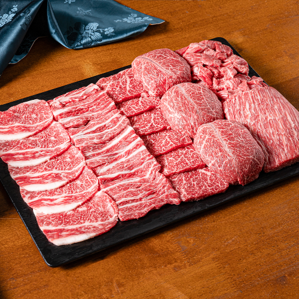
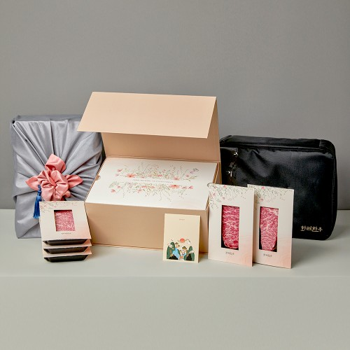
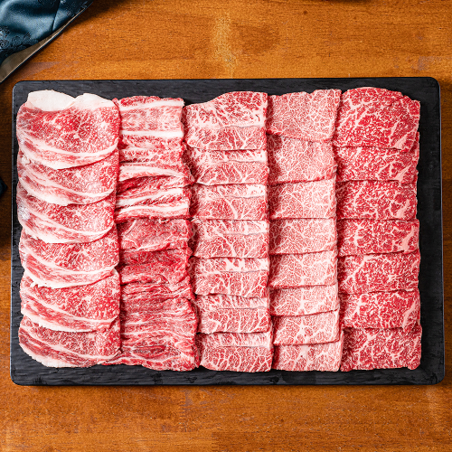

이 포스팅은 네이버 쇼핑 커넥트 활동의 일환으로, 판매 발생 시 수수료를 제공받습니다.
화려한우 투뿔 한우 선물세트, 부모님 생신 선물로 고르는 기준
부모님 생신이나 고마운 분을 찾아뵙는 날에는 오래 고민해도 결국 함께 먹을 수 있는 선물이 떠오르죠. 소고기 구이를 좋아하신다면 한우 선물세트가 자연스럽게 후보에 올라요.
화려한우 투뿔 한우 선물세트는 10월 6일 표시 가격 139,900원으로 확인했어요. 오늘은 지난 명절 할인보다, 받는 분이 좋아할 구성에 초점을 맞춰 볼게요.
💚 화려한우 선물세트 구성·가격 보기(웃는 스티커)
1. 받는 분의 취향

판매자 제공 상품사진 · 구성 및 옵션 예시 · 클릭하면 원본 사진한우 선물을 고를 때 먼저 떠올릴 건 받는 분이 어떤 식사를 좋아하시는지예요. 가족끼리 둘러앉아 구워 먹는 시간을 좋아하신다면 구이용 한우가 선물의 쓰임새를 분명하게 만들어줘요.
화려한우는 상품명에 1++ 투뿔 한우를 내세우고 있어요. 등급과 구이용 구성을 함께 보고 싶은 분에게 살펴볼 이유가 있는 상품이에요.
(좋아하는 음식으로 챙긴 선물은 마음을 설명하기도 쉽죠.)
2. 선물의 첫인상

판매자 제공 상품사진 · 구성 및 옵션 예시 · 클릭하면 원본 사진판매자가 제공한 사진에는 고기를 담은 구성과 선물 포장 예시가 함께 나와 있어요. 상자를 여는 순간의 분위기까지 생각하는 분이라면 포장 사진을 같이 보세요.
고기 부위와 총중량, 포장 방식은 선택한 세트에 맞춰 고르면 돼요. 원하는 예산 안에서 어떤 구성이 가능한지 링크에서 비교하는 편이 가장 빠르겠죠.
💚 부모님 취향에 맞는 세트·포장 선택하기3. 함께 먹는 선물

판매자 제공 상품사진 · 구성 및 옵션 예시 · 클릭하면 원본 사진꽃다발과 함께 전할 생신 선물, 감사 인사를 드릴 때 가져갈 먹거리, 주말 가족 식사까지. 한우 세트는 선물을 전하는 장면과 식탁에 올리는 장면을 함께 떠올릴 수 있어요.
구이용 한우를 찾고 있었다면 아래에서 지금 선택할 수 있는 부위와 중량을 확인해보세요. 받는 분이 좋아할 한 상을 고르는 데 도움이 될 거예요.
💚 화려한우 투뿔 선물세트 현재 구성 확인하기#화려한우 #한우선물세트 #부모님생신선물 #투뿔한우